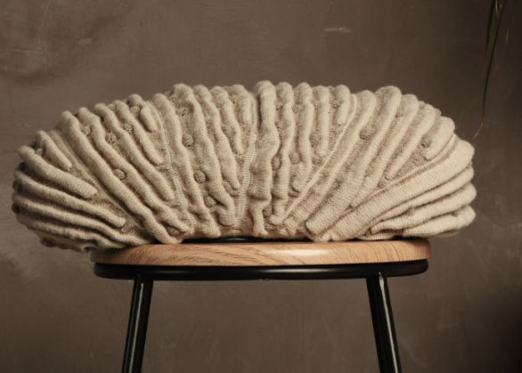
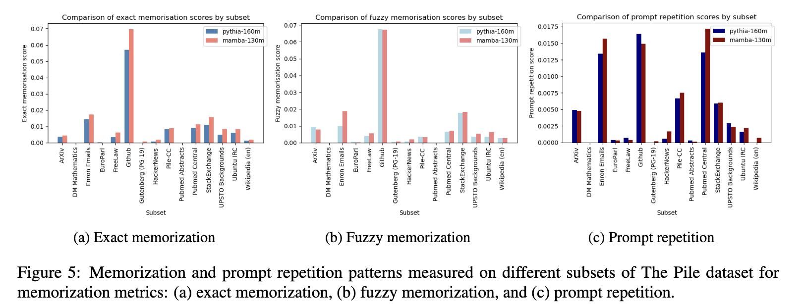
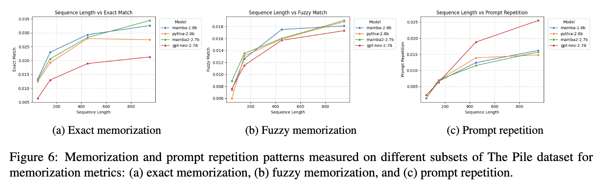
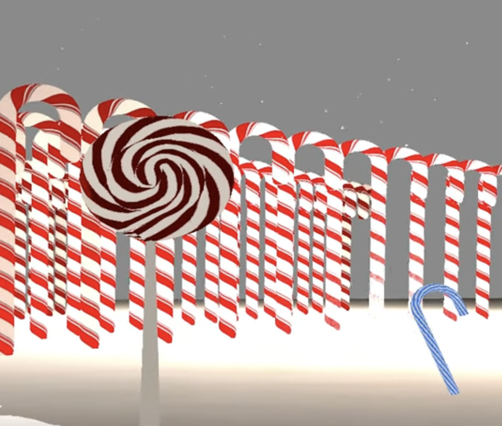
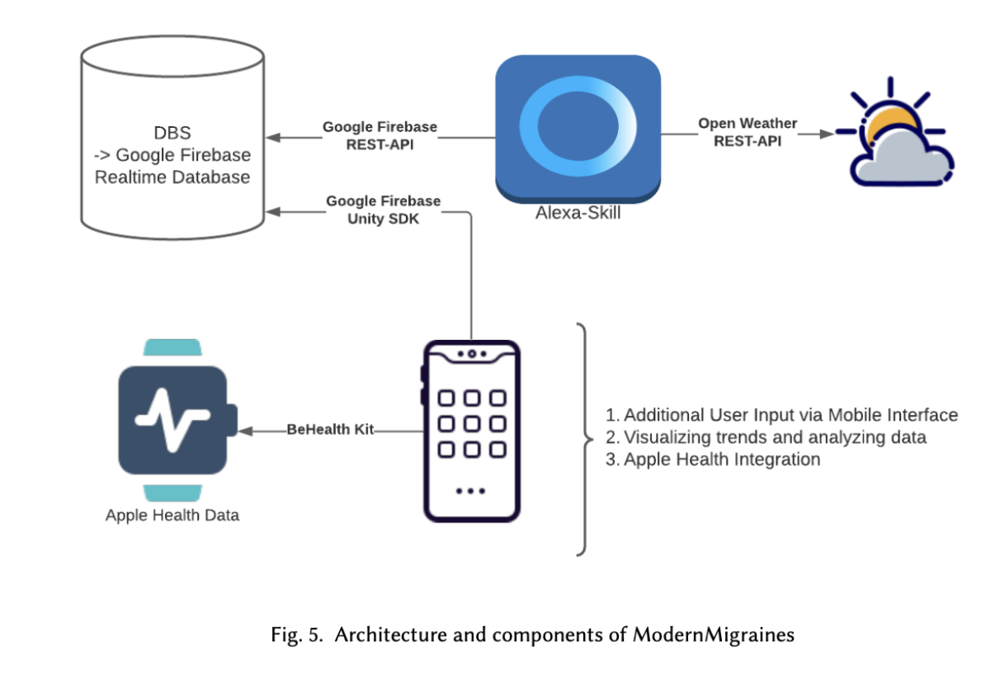

This is a selection of my work. I’ll do my best to keep it updated with open-source projects and publications (most are currently under review). While I can’t share proprietary work from companies, when aspects of our work become public or commercial, I’ll aim to abstract and highlight general features or concepts that may be of broader interest.
At Konpanion, our pet robot Maah was created to address the challenge of loneliness among the elderly.

My work draws on research in human-robot interaction, computational biology, cognitive AI, perception, and game agent design. Rather than focusing solely on technical methods, I explore broader questions: How can our robot behave like real animals—emotionally, cognitively, and socially? How does it interpret sensory input to understand human states? How can it form memories, make plans, and develop a personality shaped by experience?
I work on Maah’s autonomous software, focusing on how it adapts over time to develop a unique personality and emotional responses. We also integrate perception systems to help communicate a patient's state to caregivers and nurses.
Also, Maah looks a unusual, and that was done on purpose to make sure he feels comforting and non-threatening to users.
Investigated privacy vulnerabilities in LLM architectures SSMs to transformers through data extraction attacks and ICL 'attacks' where ICL attacks have private information.
Trends find that these models scale similarly to transformers with input-size, but retain higher levels of memorization across general extraction attacks.
 Currently under review, more will be added soon.
A 3D navigable scene created using OpenGL, featuring a winter wonderland with snow, candycanes, and a snowman. The scene includes lighting effects, textures, and basic animations.
This project leveraged OpenGL for rendering, GLSL for shaders, and C++ for the application logic. While some of the .obj and .dae files were sourced from open source projects, some were created by me in blender. 
A computer vision system to analyze draughts (checkers) gameplay from video and static images. This five-part pipeline includes pixel classification, piece detection, board transformation, motion analysis, and King piece identification.
Developed in Python using OpenCV, NumPy, and Matplotlib. Used real-game footage and annotated datasets to evaluate the system's performance.
Took a project-based research course that focuses on using cheap sensors and networked multimodal devices to create novel and thoughtful technologies.
Ideated, designed, and productionalized a personalized migraine tracking and prediction system integrating embedded sensors and voice through adaptive learning. The system blends a variety of triggers for migraines(e.g. sleep, weather, pressure) to predict and track migraines. Users can use the app, Alexa, and a watch/health integration to log their migraines and triggers, and the system will learn from this data to predict future migraines. 